Phylogeny 2
BNS-2002: Genes, Development, and Evolution
Dr Axel Barlow
email: a.barlow@bangor.ac.uk
Molecular Ecology and Evolution at Bangor (MEEB)
- 3rd year module "Molecular ecology and evolution"
- https://www.bangor.ac.uk/meeb
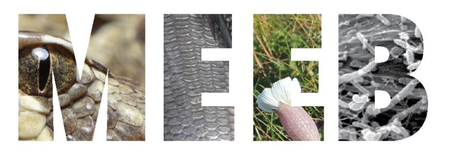
Axel Barlow research group
- Population genomics, Paleogenomics, Conservation genomics
- Dissertation and MSc projects


Lecture schedule
- Drift and variation (Evolution: Chapter 6)
- Conservation genetics (Evolution: Chapter 6)
- Phylogeny 1 (Evolution: Chapter 16)
- Phylogeny 2 (Evolution: Chapter 16)
Summary lecture 1
- What a phylogeny is
- Phylogenetics, morphological and genetic data
- gene trees
- Uses of phylogenetic trees
Lecture 2
- key concepts
- How does the gene tree form?
- lineage sorting
- Incomplete lineage sorting
- Admixture
Key concepts
Populations and species
- A group of individuals capable of reproducing
- Reproduction within populations > between populations
- Ancestral populations diverge creating new populations
- Identified by differences in allele frequencies
- Species fulfil the same criteria
- No difference from a population genetics viewpoint
Gene tree (single locus tree)
- Evolutionary history of a single locus
- (not always an actual gene)
- Each locus has its own gene tree
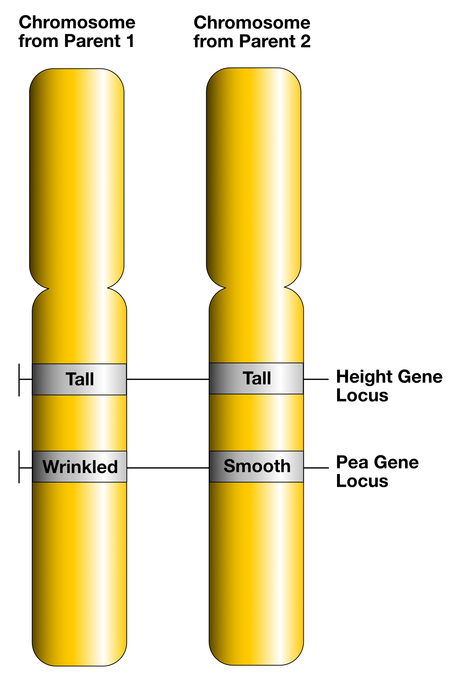
Species tree
- The actual history of populations or species
- Gene trees evolve within the species tree
- May differ due to:
- incomplete lineage sorting
- admixture
- Often what we are trying to infer
- Concatenation
- Multispecies coalescent models
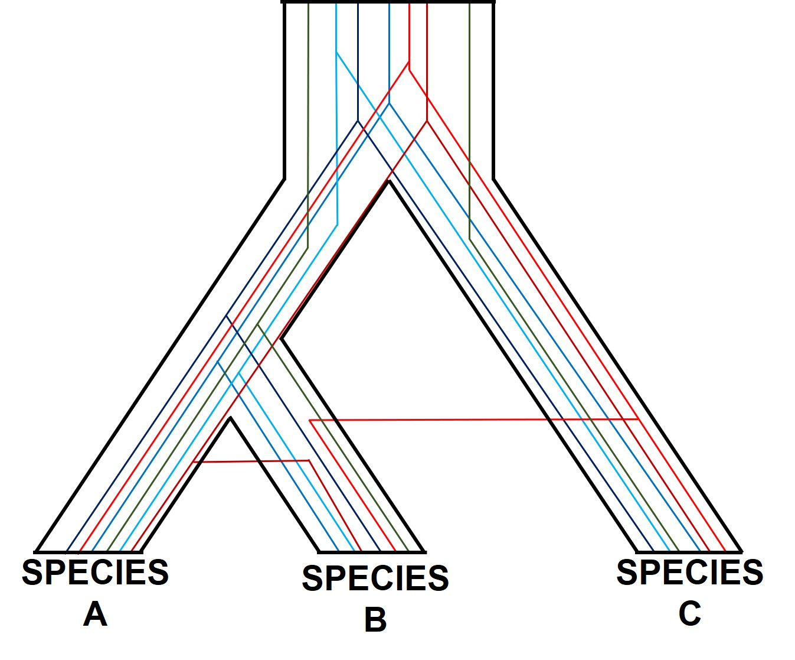
Admixture
- Post divergence genetic exchange between populations/species
- Gene flow, admixture, hybridisation.
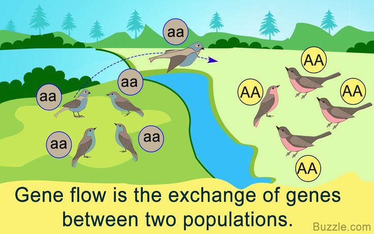
How does the tree form?
How does the tree form: lineage sorting

How does the tree form: lineage sorting

How does the tree form: lineage sorting

How does the tree form: lineage sorting
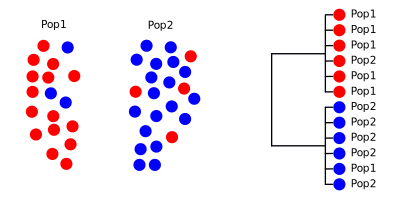
How does the tree form: lineage sorting

Lineage sorting summary
- Drift sorts the lineages into clades
- This takes time, we can't detect the divergence immediately
- We go through stages of incomplete/complete monophyly
- incomplete to complete lineage sorting
- lineage sorting is faster when the population size is small (= more drift)
- Mutation builds upon the clades, monophyly is retained [unless there is gene flow]
Gene trees may not match the species tree when:
- We catch the process part way through
- Lineages are not sorted prior to the next divergence/speciation event
- Admixture
Big cats
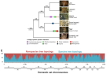
Lineage sorting summary
- Drift sorts the lineages into clades
- This takes time, we can't detect the divergence immediately
- We go through stages of incomplete/complete monophyly
- incomplete to complete lineage sorting
- lineage sorting is faster when the population size is small (= more drift)
- Mutation builds upon the clades, monophyly is retained [unless there is gene flow]
Gene trees may not match the species tree when:
- We catch the process part way through
- Lineages are not sorted prior to the next divergence/speciation event
- Admixture
Divergence with complete lineage sorting
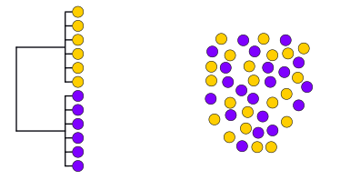
Divergence with complete lineage sorting
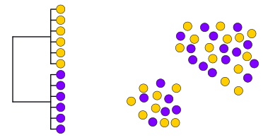
Divergence with complete lineage sorting
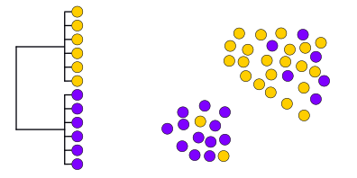
Divergence with complete lineage sorting
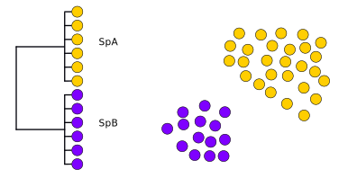
Divergence with complete lineage sorting
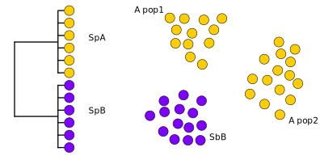
What if lineage sorting is incomplete?
Divergence with incomplete lineage sorting
Divergence with incomplete lineage sorting
Divergence with incomplete lineage sorting
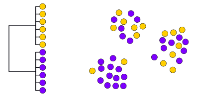
Divergence with incomplete lineage sorting
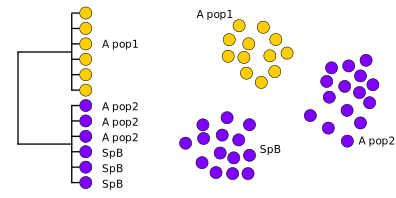
Or...
Divergence with incomplete lineage sorting
Divergence with incomplete lineage sorting
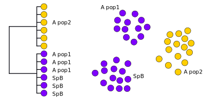
Simulator
Summary
- [Note these a just some of the many outcomes you could imagine]
- The danger zone is when alleles fail to reach fixation early in the speciation process
- i.e. prior to SpA population divergence in the example
- Because there is no selection for specific alleles, the process is random
- Either SpA population may end up grouping with SpB
Relying on a single locus tree could be misleading
- Recent divergence with large populations more likely to cause problems
- But no way of easily predicting/testing this from a single tree
Solution: multiple loci
- Generate data from several loci
- Divide whole genome sequences into loci
- Increased statistical confidence
- Can also quantify ILS (says something about pop size and divergence time)
- Potential to study admixture
Multi-locus phylogenetics
Brown bear and polar bears
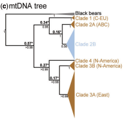
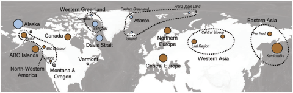
- Brown bears not monophyletic
- Divergence time ~120 Ka
- Incomplete lineage sorting (result of recent speciation)?
- Something else?
- Multiple divergent brown bear clades
- Evidence of glacial refugia
Brown bear and polar bear Y chromosome
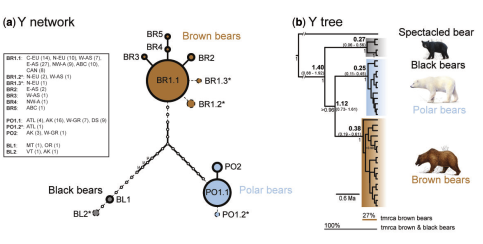
Brown bear and polar bear autosomes
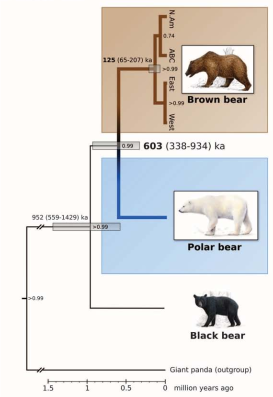
- mtDNA suggests recent speciation and brown bear glacial refugia
- Y chromosome suggests species monophyly, no evidence of brown bear refugia
- Autosomes show species monophyly, and that the species are OLD (latest estimates, 1 million years)
Explanation
- The 2 species are old and distinct
- Males move about more than females
- More recent mtDNA divergence may suggest admixture
Detecting admixture
Divergence with incomplete lineage sorting
Divergence with incomplete lineage sorting
.svg)
Divergence with incomplete lineage sorting
.svg)
Expected tree frequecies under ILS?

What about admixture?
Divergence with admixture
.svg)
Divergence with admixture
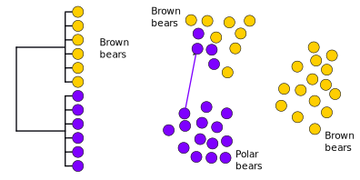
Divergence with admixture
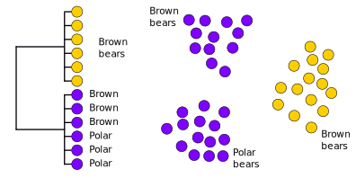
Expected tree frequencies with admixture?
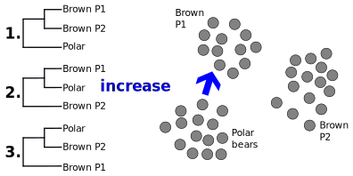
Summary
- An imbalance in the non-species tree topologies provides evidence of gene flow
- Only works if you have sequenced a LOT of loci (whole genomes)
- Can detect very ancient events
- Sometimes based on SNPs (D statistics, F-ratio statistics), essentially the same
- Revealed many examples of admixture in the past decade
Brown bear and polar bears
Nuclear genomes, 100 kb windows
Brown bear and polar bear reading
Brown bear and polar bear reading
Cave bears and brown bears
- Cave bears are sister lineage to brown bears and polar bears
- Giant vegan bears
- Extinct ~25 Ka
- Lived alongside brown bears for most of their evolutionary history

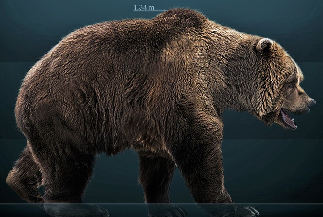
Cave bears and brown bears
Nuclear genomes, 25 kb windows
Cave bear reading
Neanderthals and anatomically modern humans
- Extinct population of humans
- Extinct ~40 Ka
- Basically a human (many morphological characters overlapping)
- Advanced culture, hunting technology, art, etc.
- Major dispersal of anatomically modern humans 70-50 Ka
- Population replacement or admixture?
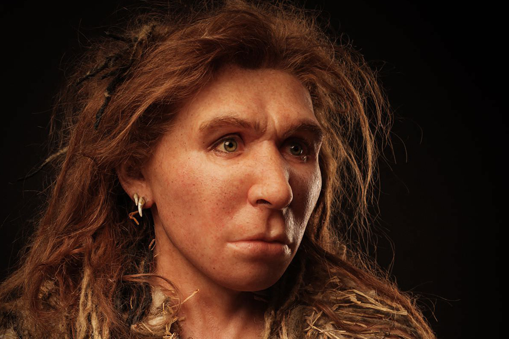
Neanderthals and anatomically modern humans

[SNP based analysis, but essentially the same]
Neanderthal reading
Thank you